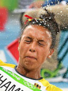
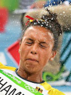

Rio 2016: Fourth-place non-medal table
"I am heartbroken," said Team GB's Adam Gemili after missing out by just millimetres on a medal in the 200m sprint.
For every medal-winner at Rio, there were many more losers, and the most frustrating place to finish must surely be fourth. But which countries saw the most competitors in this dismal position?
The short answer is the USA, but such was their dominance of the Rio Olympics that many of their fourth-placed competitors lost out on medal spots to members of their own team.
If you discount the fourth-placed also-rans who were pipped by their compatriots, you find that the most forlorn national squad at Rio was China.
Fourth-placed competitors
Excluding those finishing behind rivals from the same country
China: 19


Germany: 14
 

USA: 14
UK: 13